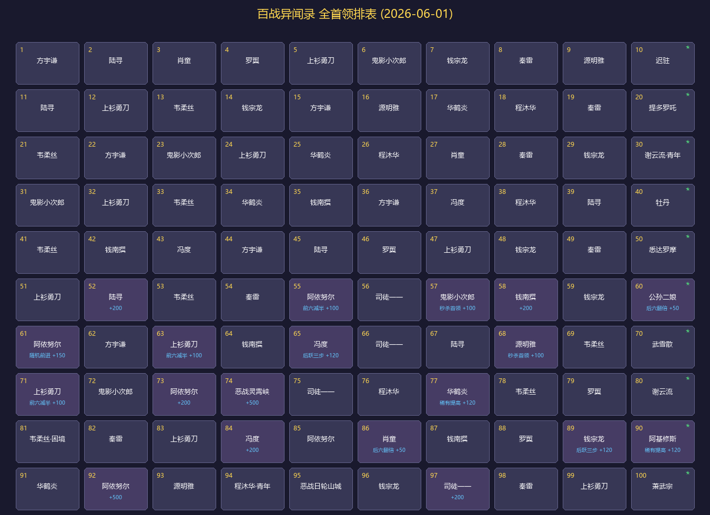

跨客户端配置同步
在正式服与测试服之间快速同步角色基础配置、剑心与茗伊插件数据。告别重复设置，换服即刻上手。
正式服zhcn_hd角色 · 插件 · 键位
→
测试服zhcn_exp同步完成
不是功能堆砌，而是一套真正理解剑网3玩家日常的桌面工作流。
在正式服与测试服之间快速同步角色基础配置、剑心与茗伊插件数据。告别重复设置，换服即刻上手。
开服、招募、日常、角色、奇遇与市场行情，一个入口完成全部查询。
聊天记录查询、数据清理、FPS 解锁与广告屏蔽，都在清晰的边界检查下完成。

按场景组织的实用能力，需要时总能快速找到。
咪罐助手对敏感信息与文件操作保持克制。每一次同步、清理和删除，都有明确范围与确认提示。
每一份支持都会用于项目的持续开发、维护与功能更新。
使用微信或支付宝扫码，为咪罐助手的持续开发与维护提供支持。